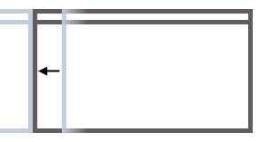
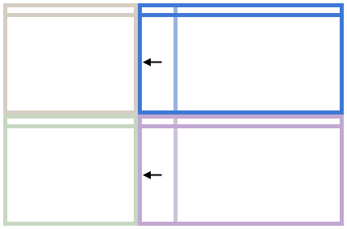

Acquire the full source from GitHub.
Acquire the full source from GitHub.
This program extends the functionality of the Windows 7 [Win][Arrow Keys] hotkeys, allowing you more control over your window layout.
This application is provided free for private or commercial use. By downloading you acknowledge that:
Download Windows Installer Executable
Download AdvancedWindowHotKeys.zip
If you download the .zip, you will require the Visual Studio 2012 C++ Redistributable.
To install AWHK, extract the archive to any location and run AWHK.exe or AWHKConfig.exe. Test by pressing [Alt][F2].
Acquire the full source from GitHub.

By default, [Alt][Arrow Keys] will expand the window in the specified direction. By default, the window expands:
Using [Alt][WASD] will move the window in a similar way.
You can change these settings in the Configuration Panel. The window will never expand over monitor's border. To move a window over the edge of on monitor to another, use [Win][Arrow Keys].
|  |

|
| A window will expand until it hits the edge of the nearest window, or... | ... it will expand to the next grid cell of the screen. |

You can make smaller increments to the grid-based movement by using [Shift][Alt][Arrow Keys].

Take the case where you have a nice setup going, but one half of the monitor isn't quite wide enough. Using [Alt][Arrow Keys] on the blue window below will cause the window to overlap the brown, and the pink would no longer be aligned.
Instead, use [Ctrl][Alt][Arrow Keys] to keep them all in sync:

|
 |
| Using [Ctrl][Alt][Arrow Keys] allows you to adjust the size of a window while preserving your window layout. | |

The configuration panel allows you to adjust some of the keys and behaviour of AWHK. The window is resizable so you can also use this to test your configuration once you hit Apply.
Future versions will apply settings as you change them for instant preview, and will allow more advanced configuration such as rebinding all keys.
Enable Snapping to Other WindowsUnticking this will mean that the foreground window will only ever align to grid edges and not snap to other windows. This may be useful for users who generally have a lot of windows open. |
Run When Windows StartsTicking this will run AWHK from it's current location whenyou log in to Windows. NOTE: If you ever move AWHK, you should untick, Apply, and re-tick this option to reset the Registry option. |
Base Key ModifierThis option is currently not modifiable and defaults to [Alt]. This combination is the basis of all the actions in AWHK. |
Fine-Snap ModifierHolding this key, as well as the Base Key Modifier, will use the Fine-Snap Grid Settings instead. This will give you finer resolution when grid-snapping. |
Adjacent Window ModifierHolding this key will activate adjacent window modification. |
Grid Snap ConfigurationHere you can adjust how many grid lines you would like for each screen axis for both regular and fine-resolution grids. |
QuitThis quits AWHK and the control panel. |
Apply, OK and Cancel
Cancel closes the configuration panel without saving any changes. |
Future versions of AWHK may include:
If you urgently wish to see these or any other features, please email awhktool@pjblewis.com.
Currently only manual uninstallation is supported. To uninstall:
Copyright © 2013 Peter J. B. Lewis